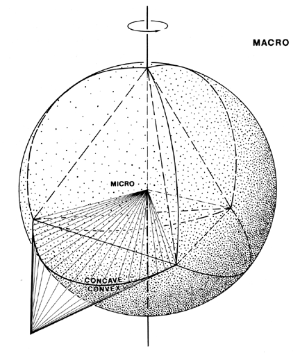

|  |
| Fig. 1073.10 Cosmic Inherency: Four Kinds of Twoness: Spin twoness is additive. Duality twoness (concave-convex) is multiplicative. The spin twoness and duality twoness together comprise a third relationship twoness. The fourth twoness is comprised of the macro-micro (insideness and outsideness) twoness. |